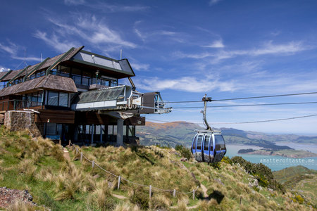
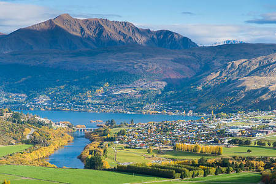
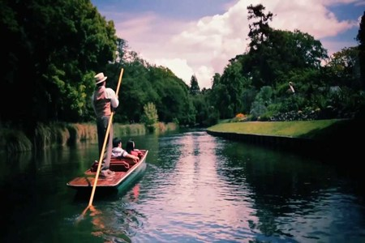
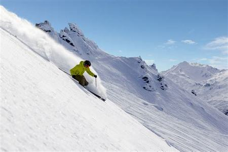
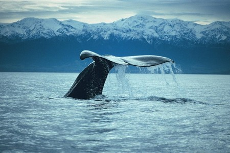
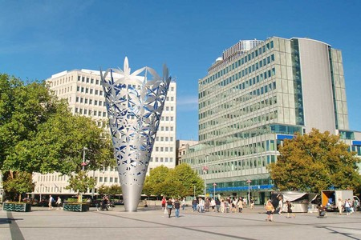
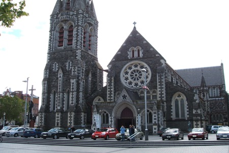

Christchurch
Fundada en 1850 y ubicada aproximadamente a 300 kilómetros al sur de la capital, Wellington, en la costa este de la Isla del Sur, siendo la ciudad más grande de ésta y
la segunda del país después de Auckland.
A dos horas de un aeropuerto internacional, se puede esquiar; jugar al golf; practicar salto en bungy, descenso de rápidos, ciclismo de montaña, windsurf, observar ballenas
y visitar jardines y viñedos de primera clase ¿En qué otro lugar del mundo se podría hacer todo esto?
Christchurch es la principal ciudad no solo de la provincia de Canterbury
sino también de la Isla Sur. Se sitúa en el extremo meridional de la bahía
de Pegasus (Pegasus Bay), en la zona central de la costa oriental de la
Isla Sur, entre la península de Banks y las llanuras de Canterbury.
La ciudad está bordeada en el este por el océano Pacífico y el estuario de
los ríos Avon y Heathcote; en el sur por los Cerros Porteños (Port Hills) y
en el norte por el río Waimakariri.
La catedral de Christchurch de culto anglicano fue edificada a partir del
año 1864 según el proyecto inicial del arquitecto británico George Gilbert
Scott y supervisado por el neozelandés Benjamin Mountfort. En 1863 se funda
el Hospital de Christchurch.Y en 1901 se inició la construcción de la
Catedral del Santísimo Sacramento de culto católico, diseñada por el
arquitecto Francis Petre.






